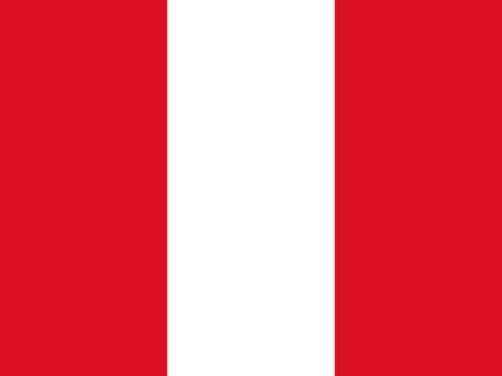

ビジネスニュース・デイリーダイジェスト
1業界連動マップ（因果フロー）
きょうの主要トピックの因果連鎖。色＝影響の符号、矢印＝波及の向き。各ノードをタップすると関連ニュースをポップアップ表示します。業界横断のマクロ文脈はダッシュボードの「業界の動き(2026)」を参照。
2時事ニュース（全項目）
見出しをクリックで、背景・サマリ・重要ポイント・今後の予測・勉強テーマを表示。
財政・政治
 消費税減税と防衛費が「トレードオフ」に 27年度予算編成で財源の奪い合い、成長投資は財源を先行確保 物価・金利・財政の正常化＋財源の制約が明示され、歳出の優先順位付けが進む契機に −防衛産業の投資計画や減税への期待がしぼみ、政策の一貫性が問われる
消費税減税と防衛費が「トレードオフ」に 27年度予算編成で財源の奪い合い、成長投資は財源を先行確保 物価・金利・財政の正常化＋財源の制約が明示され、歳出の優先順位付けが進む契機に −防衛産業の投資計画や減税への期待がしぼみ、政策の一貫性が問われる
背景
高市政権は「責任ある積極財政」を掲げ、消費税減税・防衛力強化・成長投資という巨額の歳出計画を同時に進めてきた。長期金利の上昇で国債費も膨らみ、財制審は21日に市場の信認確保を強く求める建議を出したばかり。
サマリ
年末の27年度予算編成で、消費税減税を進めるほど防衛費が当初想定より少なくなる関係が見えてきた。成長投資は財源を先行して確保する一方、複数の大型歳出が衝突し、政治判断による優先順位付けが迫られている。
重要ポイント
- 消費税減税の財源が防衛費の上積み余地を圧迫
- 成長投資（戦略分野）は財源を先に確保する設計
- 防衛省はすでに企業に27年度以降の発注減を伝達
- 国債費の増加が裁量的経費全体の天井を下げる
今後の予測
12月の安保3文書改定と予算案決定で、防衛費の5年総額が下方調整される公算が大きい。減税の規模・時期を絞るか、防衛費を国債で賄うかの選択次第で長期金利と円相場が反応する。
勉強テーマ
マーケット
 円相場が1ドル160円に迫り介入警戒が本格化 「AI株投資が円安圧力を招く」とFT、個人の米国株買いが円売りに 物価・金利・財政の正常化＋輸出企業の円安効果は業績を下支え −輸入物価の上昇が家計の実質所得を削り、利上げ圧力を強める
円相場が1ドル160円に迫り介入警戒が本格化 「AI株投資が円安圧力を招く」とFT、個人の米国株買いが円売りに 物価・金利・財政の正常化＋輸出企業の円安効果は業績を下支え −輸入物価の上昇が家計の実質所得を削り、利上げ圧力を強める
背景
円安は約1カ月続き、片山財務相は「一方的に急激な動き」とけん制した。新NISA以降、個人マネーがオルカン・米国株に流れ、米AI株への投資が構造的な円売りになっているとの見方が広がっている。
サマリ
英FTの論考は、日本の個人投資家による米AI株投資の拡大が円安圧力になっていると指摘した。円は節目の160円に迫り、当局の口先介入が再び始まった。米AI株急落後も円売りの流れは止まっていない。
重要ポイント
- 円は約1カ月で円安が進み160円に接近
- 財務相が「一方的に急激」と典型的なけん制発言
- 個人の海外株投資が恒常的な円売り需要に
- 米株急落でも円高に振れにくい構造が浮上
今後の予測
160円を明確に超えると実弾介入の可能性が高まる。日銀の12月会合での利上げ判断と、連休明けのAI株の動向が円の方向を左右する。
勉強テーマ
エネルギー

 COP31、合意文書の採択を断念し異例の閉幕 「脱化石燃料」明記なしにEUが反発、交渉の枠組みに揺らぎ 中東・エネルギー・資源＋現実的なエネルギー移行を求める企業には時間的猶予 −脱炭素の国際的な道筋が不透明になり、長期の投資判断が難しくなる
COP31、合意文書の採択を断念し異例の閉幕 「脱化石燃料」明記なしにEUが反発、交渉の枠組みに揺らぎ 中東・エネルギー・資源＋現実的なエネルギー移行を求める企業には時間的猶予 −脱炭素の国際的な道筋が不透明になり、長期の投資判断が難しくなる
背景
トルコ・アンタルヤで開かれたCOP31は、議長国が電化率35%目標を合意案に盛り込んだ一方、化石燃料の削減には触れなかった。中東危機で原油の迂回供給が増え、産油国の発言力が強まっていた。
サマリ
COP31は22日、合意文書を採択できないまま閉幕した。化石燃料削減の文言がないことにEUなどが反対し、例年のように合意を採択できなかったのは異例。各国の脱炭素政策の足並みの乱れが鮮明になった。
重要ポイント
- COPで合意文書なしの閉幕は異例
- EUは化石燃料削減の明記を求め反対
- 議長国案は電化率35%目標を軸にしていた
- エネルギー安保優先で各国の思惑が分裂
今後の予測
国際合意の後退で、企業の脱炭素投資は各国の補助金・規制次第の「国別対応」になる。EUは国境炭素調整（CBAM）など域内ルールを独自に強めるとみられ、日本の輸出企業の対応コストが増える。
勉強テーマ
資源・経済安保
 重要鉱物の政府備蓄、放出額が尖閣危機の4倍超の122億円 中国の輸出規制で取り崩し、経済活動を下支え 米中対立とブロック化＋備蓄が実際に機能し、国内生産の停止を防いだ −備蓄は有限で、中国依存の構造は変わっていない
重要鉱物の政府備蓄、放出額が尖閣危機の4倍超の122億円 中国の輸出規制で取り崩し、経済活動を下支え 米中対立とブロック化＋備蓄が実際に機能し、国内生産の停止を防いだ −備蓄は有限で、中国依存の構造は変わっていない
背景
政府はレアアースやレアメタルなど35鉱種を重要鉱物とし、JOGMECを通じて備蓄している。中国はレアアースなどの輸出規制を強め、日本企業の調達が滞る場面が増えていた。
サマリ
政府が重要鉱物の備蓄を放出して得た収入は2025年度に122億円となり、中国漁船衝突事件のあった10年度の4倍を超えた。中国の輸出規制で備蓄を取り崩して生産を維持している実態が浮かんだ。
重要ポイント
- 25年度の放出収入は122億円で10年度の4倍超
- 中国の輸出規制が備蓄取り崩しの主因
- 35鉱種をJOGMECが備蓄
- 備蓄は「時間を買う」手段で恒久策ではない
今後の予測
備蓄の積み増しと、国内製錬・リサイクル・豪州や南米からの調達への予算が27年度予算で拡充される見込み。中国が規制品目を広げれば、放出額はさらに膨らむ。
勉強テーマ
IT・AI
アンソロピック、手元資金2100億ドル超でAI経済圏の主導狙う 上場で資金面の厚み、エヌビディア・クラウド頼みから転換 AI資本サイクル＋資金力でAI開発の独立性が高まり、取引先の半導体・電力に需要 −株価の急落が続けばAI投資全体の資金循環が細る
背景
アンソロピックは19日に米市場へ上場し、評価額は約240兆円に達した。これまでAI開発企業は、エヌビディアやクラウド大手からの出資・計算資源の提供に依存してきた。
サマリ
上場で得た資金を含め、アンソロピックの手元資金は2100億ドル（約34兆円）を超えた。自前で計算資源を確保し、安全性を重視した高性能AIの開発を進め、AI経済圏で主導権を握ることを狙う。
重要ポイント
- 手元資金は2100億ドル超（約34兆円）
- 計算資源を自前で確保する余力を得た
- 「安全と成功の頂点をめざす競争」を掲げる
- 上場直後の株価急落は米AI株全体の調整の一因に
今後の予測
潤沢な資金で、データセンターや半導体の長期契約を広げる可能性が高い。一方で上場企業として収益化の速さを問われ、四半期決算ごとに株価が大きく振れる局面が続く。
勉強テーマ
建設
建設や医療の目視・検査をAIで代替、規制を全面見直し 政府が「AI・デジタル改革原則」案、年内に決定 人口減少と人手不足＋人手不足の現場で生産性向上の余地が広がる −AIの判断ミス時の責任の所在や安全基準づくりが課題
背景
建設や医療、インフラ点検などでは、人の目視や対面での検査を前提とした規制が多く残る。人手不足が深刻な現場ほど、規制がAIやロボットの導入の妨げになっていた。
サマリ
政府が年内にまとめる「AI・デジタル改革原則」の原案が判明した。人の目視や検査を前提とする規制を全面的に見直し、AIによる代替を促す。「AIを前提とした制度設計」など5原則を政府共通の指針とする。
重要ポイント
- 目視・対面前提の規制を全面見直し
- 「AIを前提とした制度設計」など5原則
- 企業が実証しやすい環境を整備
- 建設・医療・インフラ点検が主な対象
今後の予測
27年の通常国会以降、建築基準・労働安全・医療関連の省令改正が順次進む見込み。点検AIやドローンの導入が加速し、ゼネコンや点検サービス会社の省人化投資が増える。
勉強テーマ
防衛

 中国の軍拡が招く「原潜の海」 米国のアジア関与が低下し海洋抑止に穴、豪州・韓国は30年代の保有へ 安全保障の再武装＋海洋監視・対潜関連の技術需要が高まる −地域の軍拡競争が進み、偶発的な衝突のリスクが高まる
中国の軍拡が招く「原潜の海」 米国のアジア関与が低下し海洋抑止に穴、豪州・韓国は30年代の保有へ 安全保障の再武装＋海洋監視・対潜関連の技術需要が高まる −地域の軍拡競争が進み、偶発的な衝突のリスクが高まる
背景
冷戦後に減っていた原子力潜水艦が、再び安全保障の焦点になっている。中国は米国を上回るペースで原潜を建造し、台湾東方沖では海底地形の測量を進めている。
サマリ
中国の原潜増強で、米国が担ってきたアジアの海洋抑止力に穴が生じつつある。オーストラリアと韓国は2030年代の原潜保有に動き、日本周辺の海は「原潜の海」へと変わりつつある。
重要ポイント
- 中国は米国を上回るペースで原潜を建造
- 台湾東方沖で中国の測量船などが活動
- 豪州（AUKUS）と韓国が30年代の原潜保有へ
- 米国のアジア関与の低下が背景
今後の予測
日本でも潜水艦の動力や長射程化を巡る議論が安保3文書改定で浮上しうる。対潜哨戒・水中ドローン・海底監視の需要が増え、関連する重工・電子機器メーカーに受注機会が広がる。
勉強テーマ
宇宙
 ロシア、核弾頭を積んだ衛星を年内に打ち上げか 他国の衛星を破壊する能力、欧米情報機関が警告と独報道 安全保障の再武装＋宇宙安保・衛星の冗長化への投資需要 −衛星インフラ全体のリスクが高まり、宇宙ビジネスの保険・資金調達コストが上昇
ロシア、核弾頭を積んだ衛星を年内に打ち上げか 他国の衛星を破壊する能力、欧米情報機関が警告と独報道 安全保障の再武装＋宇宙安保・衛星の冗長化への投資需要 −衛星インフラ全体のリスクが高まり、宇宙ビジネスの保険・資金調達コストが上昇
背景
宇宙空間への核兵器配備は宇宙条約で禁じられている。ロシアの衛星攻撃兵器の開発は以前から米国が懸念を示してきた。衛星は通信・測位・観測など経済インフラの基盤になっている。
サマリ
独公共放送WDRなどは、ロシアが年内にも核弾頭を搭載した衛星の打ち上げを検討しているとの欧米情報機関の見方を報じた。起爆により他国の人工衛星を破壊する能力を確保する狙いとみられる。
重要ポイント
- 独WDR・NDR・南ドイツ新聞が共同で報道
- 核爆発で広範囲の衛星を無力化しうる
- 宇宙条約の核兵器配備禁止に抵触の恐れ
- 米中ロの「平和宣言」直後の報道
今後の予測
事実なら、衛星コンステレーションの保険料引き上げや、衛星の耐放射線化・分散化の需要が増える。日本でも宇宙安全保障予算と、低軌道衛星の冗長化への投資が増えるとみられる。
勉強テーマ
防衛
非核三原則「持ち込ませず」の例外明記は「一つの選択肢」 自民安保調査会幹事長、3文書改定で言及 安全保障の再武装＋抑止の実効性を高める議論が進む −国内の合意形成が難しく、近隣国との緊張を高める恐れ
背景
政府・与党は年内に安全保障関連3文書の改定を目指している。中国・北朝鮮・ロシアの核戦力の増強を受け、米国の拡大抑止をどう実効的にするかが論点になっている。
サマリ
自民党安全保障調査会の大野敬太郎幹事長は、有事に核の持ち込みの例外を認める余地を残した岡田克也元外相の答弁を書き込むことが一つの選択肢との考えを示した。「持たず、作らず」は維持すべきだとした。
重要ポイント
- 有事に「持ち込ませず」の例外を認める余地
- 2010年の岡田元外相答弁を文書に明記する案
- 「持たず、作らず」は維持
- 年内の安保3文書改定で議論
今後の予測
連立相手や世論の反発もあり、明記するかどうかは12月の改定直前まで調整が続く。明記されれば中国・北朝鮮が反発し、近隣外交や日中経済関係の緊張要因になりうる。
勉強テーマ
商社
兼松、米国の中古航空エンジン販売会社に出資 新造機の遅れで機体寿命が延び、部品の交換需要を開拓＋景気に左右されにくい整備需要を取り込める −新造機の供給が回復すれば中古部品の価格が下落するリスク
背景
ボーイングやエアバスの新造機の納入遅れが続き、航空会社は既存機を長く使っている。整備や部品交換の需要が増え、中古エンジン・部品の市場が拡大している。
サマリ
兼松は米国で中古航空エンジンを販売するエアロ・エンジン・ソリューションズ（AES）に出資し、エンジン部品販売に参入した。商社各社は取引網を生かし、航空機の供給網でのビジネスを広げている。
重要ポイント
- 兼松が米AESに出資しエンジン部品販売に参入
- 新造機の遅れで既存機の活用が長期化
- 中古エンジン・部品の需要が拡大
- 商社が航空機の供給網ビジネスを拡大
今後の予測
新造機の納入正常化には数年かかる見通しで、中古部品・リース需要は当面続く。ヒューリックの航空機リース参入など異業種の参入も増え、取得競争で部品価格が高止まりする可能性がある。
勉強テーマ
商社
住友商事、中小企業に出資する450億円のファンド AIで工場の操業を改善し企業価値を高める 資本効率の要求と企業再編＋後継者不足の中小企業に資本と経営改善の手段 −投資先の取得競争と、AI導入の効果が出るまでの時間
背景
後継者不足の中小企業の事業承継が課題になっている。PEファンドによる中小企業への投資が広がり、総合商社も自社の知見を生かした投資を増やしている。
サマリ
住友商事は出資先の投資会社と組み、中小企業に出資する450億円程度のファンドを設立した。数年で30〜40社程度に出資し、住商のAIの知見で工場の操業などを改善して企業価値を高める。
重要ポイント
- ファンド規模は450億円程度
- 数年で30〜40社に出資
- 住商が10%超を出資するPEファンドと組む
- AIで操業改善し企業価値を高める
今後の予測
事業承継型の中小企業投資は商社・銀行・PEの競争が激しくなる。案件の取得価格が上がれば、AIによる改善効果をどれだけ早く示せるかが運用成績を分ける。
勉強テーマ
エネルギー
東電HD、福島第1原発の廃炉・復興を担う「新本社」を27年度にも新設 権限を広げ専門人材の採用を拡大＋廃炉体制の強化で工程の遅れを取り戻す期待 −廃炉費用の膨張が東電の財務を圧迫し続ける
背景
福島第1原発の溶融燃料（デブリ）の取り出しは試験的な段階にとどまり、廃炉の工程は長期化している。東電は柏崎刈羽原発の再稼働を進める一方、廃炉体制の強化を求められていた。
サマリ
東京電力HDは27年度にも「福島復興・廃炉本社」を新設する。権限を広げて専門人材を確保しやすくし、デブリ回収に向けた体制を強化する。近く公表し、原子力規制委員会に説明する見通し。
重要ポイント
- 「福島復興・廃炉本社」を新設
- 権限拡大で専門人材の採用を拡大
- デブリ回収の体制を強化
- 外部との資本提携も視野
今後の予測
廃炉の専門組織化で、重工・ゼネコン・ロボット企業との長期契約が増えるとみられる。柏崎刈羽の再稼働と合わせて東電の経営再建計画の見直しにつながる。
勉強テーマ
メーカー
洋上風力の点検を海洋ドローンで無人化、川崎重工が海底基地を実証 内閣府が費用負担 人口減少と人手不足＋洋上風力の運用コスト削減と海洋ロボット市場の拡大 −実用化までの期間が長く、洋上風力の案件自体が減るリスク
背景
洋上風力発電は維持・整備のコストが高く、作業員の確保も難しい。三菱商事の撤退など洋上風力の採算悪化が問題となり、運用コストの削減が普及の鍵になっている。
サマリ
内閣府は、洋上風力や海底ケーブルを無人で点検する自律型無人潜水機（AUV）の海底基地の実証を支援し、川崎重工業の事業費を負担する。AUVを海中に常駐させ、人手と作業時間を減らす。
重要ポイント
- AUVの海底基地を設ける実証
- 川崎重工の事業費を内閣府が負担
- 洋上風力・海底ケーブルを無人点検
- 維持管理の人手と時間を削減
今後の予測
実証が成功すれば、海底ケーブルや港湾インフラの点検にも横展開される。洋上風力の運用コストが下がれば、停滞する入札の採算見直しにつながる可能性がある。
勉強テーマ
薬品
政投銀、薬単位で治験費用を共同で担う新会社 中堅製薬の新薬開発を後押し、創薬の国際競争力を底上げ＋開発リスクを分散でき、有望な新薬候補の開発が止まりにくくなる −失敗時の損失を公的金融が負うことになる
背景
日本の製薬会社は欧米の大手に比べ研究開発費が小さく、海外で承認された薬が国内で使えない「ドラッグロス」も問題になっている。最終段階の治験は数百億円規模の費用がかかる。
サマリ
日本政策投資銀行は、製薬会社ごとではなく薬単位で投資し、治験の費用を共同で負担する新会社を設立した。資金力のある大手でなくても新薬開発に積極的に取り組めるようにする。
重要ポイント
- 製薬会社ではなく薬単位で投資
- 最終段階の治験費用を共同負担
- 中堅製薬の開発リスクを分散
- ドラッグロス解消・創薬力強化が狙い
今後の予測
成功報酬型の資金は、中堅製薬やバイオ新興の後期開発を後押しする。民間金融機関や海外ファンドが同様の枠組みに参加すれば、国内の創薬資金市場が厚みを増す。
勉強テーマ
食品
チョコやプロテインの原料が高騰、不二製油社長「GLP-1薬の普及で需要構造が変化」 代替素材の需要拡大 物価・金利・財政の正常化＋代替素材・植物性たんぱくの需要拡大 −原料高が続き、菓子メーカーや消費者の負担が増す
背景
カカオ豆は気候変動による不作で高値が続く。肥満症治療薬GLP-1受容体作動薬の普及で、食事量が減る一方、筋肉維持のためのたんぱく質需要が高まっている。
サマリ
植物性油脂や業務用チョコを手掛ける不二製油の大森達司社長は、プロテイン原料の米国からの輸出価格が26年1〜5月平均で33%上昇したと指摘し、GLP-1薬の普及がその一因だとした。代替素材の需要が広がっている。
重要ポイント
- 米国からのプロテイン原料の輸出価格が33%上昇
- GLP-1薬の普及でたんぱく質需要が増加
- カカオ不作でチョコ原料も高騰
- 植物由来の代替素材に需要
今後の予測
原料高は来年も続き、菓子・健康食品の値上げや内容量の削減が続く見込み。代替チョコや植物性たんぱくの採用が広がり、素材メーカーの付加価値が高まる。
勉強テーマ
エネルギー
LPガス、賃貸物件の設備費の肩代わりを全面禁止へ 経産省、入居者のガス代への上乗せを是正 物価・金利・財政の正常化＋入居者のガス代が下がり、料金の透明性が高まる −設備費がオーナー負担となり家賃に転嫁される恐れ
背景
LPガス会社が賃貸住宅のオーナーに給湯器やエアコンなどを無償提供し、その費用を入居者のガス代に上乗せする商慣行が続いてきた。全国で2000万超の世帯がLPガスを利用している。
サマリ
経済産業省は、LPガス会社が賃貸マンションやアパートの設備費を肩代わりする商慣行を全面的に禁止する。入居者が割高なガス代を払わされている状況を是正するため、ルールを厳しくする。
重要ポイント
- 設備費の肩代わりを全面禁止
- 入居者のガス代への上乗せを是正
- LPガスの利用は全国2000万世帯超
- 都市ガスのない地方で欠かせないインフラ
今後の予測
ガス会社の営業競争の手段が無くなり、料金の透明化と中小事業者の再編が進む可能性が高い。オーナーは設備を自分で負担する必要があり、家賃に転嫁される可能性もある。
勉強テーマ
小売
六花亭の通販カード情報流出、住所や氏名も漏れた可能性 不正利用を1件確認し見舞金を用意 サイバー攻撃とデジタルの信頼＋決済のセキュリティ強化を促す契機 −ブランドの信頼低下と対応費用の負担
背景
国内ではECサイトの改ざんによるカード情報の流出が相次いでいる。プレイド経由の大規模漏洩など、外部サービスを経由した情報流出も問題になっている。
サマリ
菓子メーカー六花亭（北海道帯広市）の通販サイトでのカード情報流出で、住所や氏名なども流出した可能性が新たに判明した。顧客の申し出で不正利用が1件確認され、カードの再発行を呼びかけている。
重要ポイント
- カード番号に加え住所・氏名も流出の可能性
- 不正利用を1件確認
- 見舞金を用意し再発行を呼びかけ
- 地方の人気ブランドの通販にも被害
今後の予測
中堅・地方企業のECでもカード情報を持たない決済方式への切り替えが進む。被害企業への集団訴訟や賠償請求のリスクが意識され、サイバー保険への加入が増える。
勉強テーマ
通信・サイバー
サイバー攻撃の被害企業に顧客から訴訟リスク パーク24は146万件流出で集団訴訟、データ保有や契約の見直し急務 サイバー攻撃とデジタルの信頼＋データ管理の改善とサイバー防御投資が進む −被害企業の賠償・訴訟コストが増える
背景
国内ではランサムウエアや不正アクセスの被害が急増し、委託先を経由した大量流出も相次ぐ。被害を受けた企業が顧客から責任を問われる事例が増えている。
サマリ
タイムズカーへの不正アクセスで免許証など146万件の画像データが流出したパーク24に対し、利用者側が訴訟を起こすなど、サイバー被害企業の法的責任が問われ始めた。専門家は保有データや契約内容の見直しを求めている。
重要ポイント
- パーク24は本人確認書類146万件が流出
- 被害企業が顧客から賠償責任を問われる流れ
- 不要な個人データの保有がリスクに
- 委託先との契約で責任分担の明確化が必要
今後の予測
判決で賠償額の相場が示されれば、企業はデータの削減とサイバー保険の拡充を急ぐ。委託先管理の不備を理由とした株主代表訴訟が出る可能性もある。
勉強テーマ
IT・AI
iPhone Duoを分解、画面不具合はヒンジの設計が要因か アップル初の折りたたみ端末、こだわりが裏目に＋改良需要で部品メーカーに追加の受注機会 −品質問題で販売が伸び悩めば部品の受注が減る
背景
アップルは10月23日に初の折りたたみ型スマホ「iPhone Duo」を発売した。発売後、画面の不具合の報告が相次いでいた。
サマリ
日本経済新聞は調査会社フォーマルハウト・テクノ・ソリューションズの協力でiPhone Duoを分解した。報告が相次ぐ画面不具合は、折り曲げ部品「ヒンジ」の設計が影響した可能性が浮かんだ。原価率も分析した。
重要ポイント
- 画面の不具合はヒンジ設計が影響した可能性
- アップル独自の設計へのこだわりが裏目に
- 分解で原価率も分析
- 日本の部品メーカーの採用状況も焦点
今後の予測
ヒンジの改良版の投入や保証対応の拡大で、年末商戦の販売が伸び悩む可能性がある。部品供給する日本の電子部品メーカーは、次期モデルでの仕様変更に伴う受注変動に注意が必要。
勉強テーマ
不動産
三菱地所、丸の内を「街ごと広告」に 東京駅前のジャックは1週間7500万円、来街者増と収益化を狙う＋賃料以外の収益源の多様化 −広告需要の景気変動に左右される
背景
オフィス街の丸の内には約35万人が働く。テレワークの定着でオフィス街のにぎわいづくりが課題となり、デベロッパーは賃料以外の収益源を探している。
サマリ
三菱地所は丸の内エリアで一体的にプロモーションが打てる広告プランの提供を始めた。目玉の東京駅前をジャックするプランは1週間で約7500万円。27年3月までに5件程度の契約を目指す。
重要ポイント
- 東京駅前のジャックは1週間約7500万円
- 丸の内エリア一体での広告プラン
- 27年3月までに5件程度の契約が目標
- 約35万人が働く街の集客力を収益化
今後の予測
成功すれば、六本木・渋谷など他のデベロッパーも街全体を媒体にする事業を広げる。屋外広告とデジタル広告を組み合わせた「エリアメディア」の市場が拡大する。
勉強テーマ
半導体
 SCREENやオムロン、インド市場に続々進出 京都企業が半導体や医療機器で14億人市場を開拓 米中対立とブロック化＋成長市場での需要獲得 −インフラ・人材面の課題で投資回収が長期化
SCREENやオムロン、インド市場に続々進出 京都企業が半導体や医療機器で14億人市場を開拓 米中対立とブロック化＋成長市場での需要獲得 −インフラ・人材面の課題で投資回収が長期化
背景
インドは国内生産を重視する政策で半導体工場の誘致を進めている。経済成長で産業の高度化が進み、日本企業の進出先として存在感を増している。
サマリ
京都企業が技術力を武器にインド市場の開拓を急いでいる。SCREENなど半導体関連企業が相次いで進出し、オムロンの医療機器や衣料品の企業も現地での事業展開を急いでいる。
重要ポイント
- SCREENなど半導体関連が相次ぎ進出
- オムロンは医療機器で展開
- インドの国内生産重視政策が追い風
- 人口14億人超の巨大市場
今後の予測
インドの半導体工場の立ち上がりに合わせ、装置・材料メーカーの現地拠点が増える。人材確保やインフラの不安定さが壁になり、収益化には数年かかる見通し。
勉強テーマ
人材
中小の事業承継M&A、税理士が情報格差を埋める 会計事務所の連携団体が共有データベース開設 人口減少と人手不足＋中小企業が安心して承継先を探せる −税理士の専門性の差や情報量の限界
背景
後継者不足で事業承継型のM&Aが増える一方、仲介会社による高額な手数料や、買い手による資金の流出などのトラブルが問題になっていた。
サマリ
独立系の税理士法人でつくる「会計事務所連携協議会」は、事業承継などを希望する企業の情報を共有するデータベースを11月に開設した。経営状況を熟知する税理士が支援し、仲介会社への依存を減らす。
重要ポイント
- 税理士法人の団体が共有データベースを開設
- 経営を熟知する税理士が支援
- M&A仲介会社への依存を減らす
- 事業承継のトラブル回避が狙い
今後の予測
中小企業庁の仲介事業者への規制強化と合わせ、税理士や地銀の承継支援が広がる。仲介会社の手数料競争が進み、業界の再編につながる可能性がある。
勉強テーマ
教育
奨学金の金利が3%に到達し返済負担が増加 企業が拠出する「返済不要型」の拡充が急務 物価・金利・財政の正常化＋企業の奨学金支援が人材確保策として広がる −金利上昇が若者の消費や結婚・出産の判断を圧迫
背景
日本学生支援機構の有利子奨学金の金利は、市場金利の上昇に合わせて上がっている。大学生の約半数が奨学金を利用しており、卒業後の返済が若者の生活を圧迫している。
サマリ
奨学金の金利が3%に達し、返済負担が増している。教育格差を縮め、学業に集中できる環境を支えるため、企業が資金を出す返済不要の給付型奨学金を広げる動きが始まっている。
重要ポイント
- 有利子奨学金の金利が3%に到達
- 利用者の返済負担が増加
- 企業拠出の給付型奨学金の拡充が課題
- 代理返還制度を使う企業も増加
今後の予測
人材確保を狙う企業が代理返還や給付型奨学金を採用活動に組み込む動きが広がる。政府も給付型の対象拡大を検討しており、27年度予算での拡充が焦点になる。
勉強テーマ
教育
家政学や看護の大学に「男子枠」 受験の心理的ハードルを下げ、男女の偏りを是正 人口減少と人手不足＋人手不足の職種で担い手の裾野が広がる −性別による枠の公平性に議論
背景
理工系の大学では女子枠の導入が広がっている。逆に家政学や看護系などでは男子学生が少なく、男性の看護師や保育士の確保も課題になっている。
サマリ
家政学や看護を学ぶ大学で、入試に「男子枠」を設ける動きが出てきた。ある大学では今年度の入試から男子枠を導入し、22人が入学した。試験の難易度や合否のラインは一般枠とほぼ変わらない。
重要ポイント
- 学校推薦型・総合型選抜に男子枠を設置
- 今年度は男子枠で22人が入学
- 難易度は一般枠とほぼ同じ
- 女子枠の理工系とは逆方向の取り組み
今後の予測
少子化で学生確保に悩む大学が、性別の偏りの是正を掲げた入試の多様化を進める。看護・保育など人手不足の職種で男性の担い手が増えれば、人材供給の底上げにつながる。
勉強テーマ
エンタメ
スマホの縦型ドラマで「サブスク解約できず」の相談が急増 1年で211件、無料視聴の誘導から定額課金に 中国の減速と輸出攻勢＋市場が拡大し、国内の制作会社にも機会 −消費者トラブルが業界の信頼を損なう
背景
スマホで1話数分の縦型ドラマを見るサービスが、中国発を中心に世界で急拡大している。SNS広告から無料で視聴を始めさせ、続きを見るために課金させる仕組みが多い。
サマリ
縦型ドラマの配信サービスで、サブスクリプションを解約できないなどのトラブルが急増している。2026年9月までの1年間で、全国52の消費生活センターに少なくとも211件の相談が寄せられた。
重要ポイント
- 1年間で少なくとも211件の相談
- 解約方法が分かりにくい設計が問題
- SNS広告から課金に誘導
- 中国発のサービスが市場を拡大
今後の予測
消費者庁が「ダークパターン」規制の対象として注意喚起や指導に乗り出す可能性が高い。国内の制作会社や通信会社も縦型ドラマに参入しており、解約しやすさが信頼の差になる。
勉強テーマ
海外マクロ

 26年のエルニーニョは「ゴジラ級」 史上最強規模で世界の農産物・エネルギー需給に打撃の懸念＋代替調達や農業テックへの需要 −食品・エネルギーの物価を押し上げ、新興国の家計を圧迫
26年のエルニーニョは「ゴジラ級」 史上最強規模で世界の農産物・エネルギー需給に打撃の懸念＋代替調達や農業テックへの需要 −食品・エネルギーの物価を押し上げ、新興国の家計を圧迫
背景
エルニーニョ現象は太平洋の海面水温が高くなる現象で、世界各地に異常気象をもたらす。今年は記録的に強い「スーパーエルニーニョ」が発生し、国内でもレタスの輸入が増えるなど影響が出ている。
サマリ
今年のエルニーニョは11月ごろに史上最強規模になるとみられ、海外では「ゴジラ級」と呼ばれる。気候だけでなく、農作物の不作や電力需要の変化を通じて経済にも大きな打撃を与える懸念が高まっている。
重要ポイント
- 11月ごろに史上最強規模になる見通し
- 海外では「ゴジラ級」と呼ばれる
- 東南アジアの干ばつやカカオ・コメの不作リスク
- 国内でも野菜の輸入増など影響
今後の予測
来年前半にかけて、パーム油・カカオ・コーヒー・コメなどの価格が上がりやすい。食品メーカーの値上げや、アジアの水力発電の低下によるLNG需要の増加につながる可能性がある。
勉強テーマ
海外政治経済
EUとインドネシアが包括的経済連携協定に署名 関税を大幅に下げ、重要鉱物の供給網づくりで連携 米中対立とブロック化＋資源調達の多様化と貿易拡大 −日本企業にとっては資源獲得の競争相手が増える
背景
インドネシアはニッケルの世界最大の産地で、EV電池の材料供給で存在感を高めている。EUは中国依存を減らすため、資源国との協定を急いでいる。
サマリ
EUとインドネシアは21日、包括的経済連携協定（CEPA）に署名したと発表した。両地域の貿易にかかる関税を大幅に引き下げ、重要鉱物の供給網づくりで連携する。
重要ポイント
- EU・インドネシアがCEPAに署名
- 関税を大幅に引き下げ
- ニッケルなど重要鉱物の供給網で連携
- EUは資源国との協定で中国依存を低減
今後の予測
欧州の電池・自動車メーカーのインドネシア投資が増え、日本企業との資源獲得競争が激しくなる。インドネシアのニッケルの環境・人権面の基準がEU向けに厳しくなる可能性がある。
勉強テーマ
海外政治経済
 中国政府と輸出入銀行、台湾企業「台商」支援で金融協定 28日の台湾統一地方選をにらみ国民党を後押し 米中対立とブロック化＋中国で事業を営む台湾企業の資金繰りが改善 −経済を通じた政治工作として台湾当局が警戒
中国政府と輸出入銀行、台湾企業「台商」支援で金融協定 28日の台湾統一地方選をにらみ国民党を後押し 米中対立とブロック化＋中国で事業を営む台湾企業の資金繰りが改善 −経済を通じた政治工作として台湾当局が警戒
背景
台湾では28日に統一地方選が行われ、頼清徳政権への初の審判となる。中国で事業を営む台湾企業「台商」は、対中対話路線の野党・国民党の支持基盤になっている。
サマリ
中国国務院台湾事務弁公室は23日、台商などを支援するため政府系の中国輸出入銀行と協定を結んだ。台湾の統一地方選をにらみ、国民党を支える狙いがあるとみられる。
重要ポイント
- 国台弁と中国輸出入銀行が協定
- 中国で事業を営む台湾企業を金融支援
- 28日の台湾統一地方選をにらむ
- 国民党の支持基盤への働きかけ
今後の予測
選挙結果次第で、中台の経済交流と台湾企業の対中投資の方向が変わる。国民党が大勝すれば、中国はさらに経済面の優遇策で台湾世論への働きかけを強める。
勉強テーマ
海外政治経済
 金正恩氏、トランプ氏が呼びかけた中国での会談に応じず ロシアの後ろ盾で米朝交渉の主導権が北朝鮮に 安全保障の再武装＋対話の窓は残る −北朝鮮の核保有の既成事実化が進む
金正恩氏、トランプ氏が呼びかけた中国での会談に応じず ロシアの後ろ盾で米朝交渉の主導権が北朝鮮に 安全保障の再武装＋対話の窓は残る −北朝鮮の核保有の既成事実化が進む
背景
トランプ大統領は16日に「中国に金正恩氏が来るかもしれない」と述べ、米中首脳会談に合わせた米朝会談に意欲を示していた。北朝鮮はロシアとの軍事協力を深めている。
サマリ
北朝鮮の金正恩総書記は、トランプ大統領が呼びかけた中国での会談に応じなかった。ロシアの後ろ盾もあり、成果の見えない対話を急ぐ理由はない。トランプ氏が焦るほど北朝鮮は有利な交渉を進めやすくなる。
重要ポイント
- 金正恩氏が中国での米朝会談に応じず
- ロシアとの協力で北朝鮮の立場が強化
- トランプ氏の対話の意欲が交渉力を弱める
- 日本の拉致・核問題にも影響
今後の予測
北朝鮮は核保有を前提とした交渉を求め、米国の譲歩を待つ構えを続ける。日本は安保3文書改定で北朝鮮のミサイルへの対応を強め、防衛費の議論にも影響する。
勉強テーマ
海外政治経済

 欧州25カ国超で若者が一斉デモ、軍備拡張や徴兵に反対し教育・住宅への予算を要求 物価・金利・財政の正常化＋若者の声が政策の優先順位に反映される可能性 −国防と社会保障の財源の奪い合いが激化
欧州25カ国超で若者が一斉デモ、軍備拡張や徴兵に反対し教育・住宅への予算を要求 物価・金利・財政の正常化＋若者の声が政策の優先順位に反映される可能性 −国防と社会保障の財源の奪い合いが激化
背景
欧州各国はロシアの脅威を受けて国防費を大幅に増やし、徴兵制の復活を議論する国もある。一方で物価高や住宅費の高騰が若者の生活を圧迫している。
サマリ
欧州各地で20日、教育環境の改善や生活費負担の軽減を求める若者のデモが一斉に開かれた。50超の学生・若者団体が呼びかけ、英国・ドイツ・イタリアなど25カ国以上で開かれた。
重要ポイント
- 25カ国以上で一斉デモ
- 軍備拡張・徴兵への反対
- 教育・社会保障・住宅への投資を要求
- 50超の学生・若者団体が参加
今後の予測
国防費の増額と社会保障のバランスが欧州各国の選挙の争点になる。財政余力の小さいフランスやイタリアでは、国防費目標の達成が遅れる可能性がある。
勉強テーマ
📈株価の反応（ニュース×株価）
きょう登場した企業の株価の受け止め。「対日経」は日経平均連動ETFに対する超過分。詳しい値動きとシナリオは株価×ニュースへ。
3企業分析（本日動いた企業）
その日の主役企業の財務スナップショット＋ポジ/ネガ＋直近の動き。
米国の中古航空エンジン販売会社AESに出資し、エンジン部品販売に参入した。新造機の遅れで既存機の活用が長期化し、交換部品の需要を取り込む。
出資先の投資会社と組み、中小企業に出資する450億円程度のファンドを設立した。数年で30〜40社に出資し、AIで工場の操業を改善する。
27年度にも福島第1原発の廃炉・復興を担う新本社を設け、権限を広げて専門人材の採用を拡大する。デブリ回収の体制を強化する。
内閣府の支援で、洋上風力や海底ケーブルを無人で点検するAUVの海底基地の実証を行う。防衛では発注減の逆風がある。
社長がプロテイン原料の輸出価格の33%上昇やGLP-1薬による需要構造の変化を指摘。代替チョコや植物性たんぱくの需要が広がる。
タイムズカーへの不正アクセスで本人確認書類の画像146万件が流出し、利用者側から集団訴訟を起こされた。
通販サイトのカード情報流出で、住所や氏名も流出した可能性が判明し、不正利用を1件確認。見舞金を用意した。
丸の内エリア一体で広告を打てるプランを始め、東京駅前のジャックは1週間約7500万円。27年3月までに5件程度の契約を目指す。
京都企業のインド進出の先頭に立ち、現地の半導体工場の立ち上がりに合わせて事業を広げる。
医療機器でインド市場の開拓を急ぐ。成長市場の健康需要を取り込む。
初の折りたたみ端末iPhone Duoの分解で、画面不具合の要因がヒンジの設計にある可能性が浮かんだ。
上場で手元資金は2100億ドル超となり、計算資源を自前で確保してAI経済圏の主導を狙う。
4今後起きそうなこと
その日のニュースから論理的に予測できる中短期の展開（確度つき）。